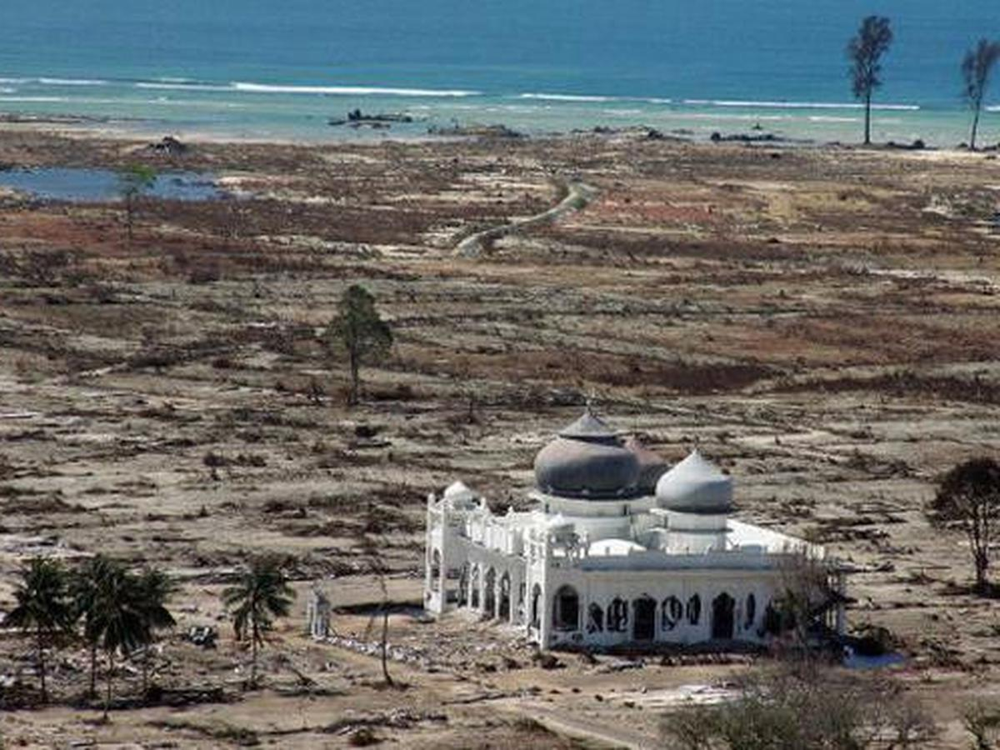
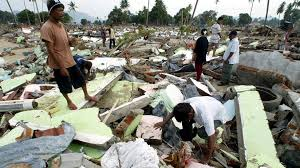
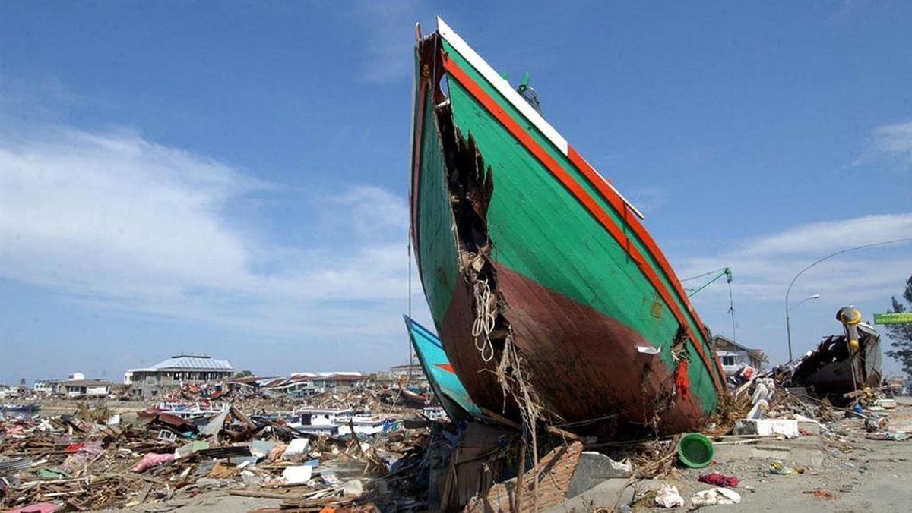

Bencana yang Mengubah Sejarah dan Menguatkan Kemanusiaan
Provinsi Aceh terletak di ujung barat Pulau Sumatra, dekat pertemuan lempeng Indo-Australia dan Eurasia. Wilayah ini termasuk zona subduksi yang sangat aktif secara tektonik — menjadikannya daerah rawan gempa bumi dan tsunami.
Pada Minggu pagi, 26 Desember 2004 pukul 07.58 WIB, terjadi gempa bumi dahsyat di lepas pantai barat Aceh, sekitar 150 km barat daya Meulaboh. Gempa berkekuatan 9,1–9,3 SR ini termasuk terbesar ketiga dalam sejarah dunia modern dan berlangsung sekitar 10 menit.
Gempa menyebabkan dasar laut naik sekitar 10 meter, memicu gelombang tsunami raksasa. Dalam waktu 10–15 menit, gelombang pertama menghantam pantai barat Aceh, dengan tinggi mencapai 30 meter di beberapa lokasi seperti Lhoknga dan Ulee Lheue.
Tsunami melanda hampir seluruh pantai barat Aceh dan sebagian pantai utara Sumatra, termasuk Banda Aceh, Meulaboh, Calang, Sabang, dan Aceh Besar. Selain Indonesia, 14 negara lain seperti Thailand, Sri Lanka, India, dan Somalia juga terdampak.
Pemerintah Indonesia menetapkan status bencana nasional. Ribuan relawan, TNI, dan organisasi internasional membantu korban. Lebih dari 50 negara mengirimkan bantuan, menjadikan ini salah satu operasi kemanusiaan terbesar di dunia.
Pemerintah membentuk BRR Aceh–Nias pada tahun 2005 untuk membangun kembali rumah, sekolah, dan infrastruktur. Dalam 5 tahun, sebagian besar wilayah Aceh berhasil pulih secara fisik, meskipun trauma masyarakat masih membekas.
Bencana ini menjadi titik balik bersejarah: konflik antara GAM dan pemerintah RI berakhir melalui Perjanjian Damai Helsinki (15 Agustus 2005), dan Aceh memperoleh otonomi khusus.
Tsunami Aceh mengajarkan pentingnya sistem peringatan dini, pendidikan mitigasi bencana, dan solidaritas kemanusiaan. Kini, Museum Tsunami Aceh berdiri sebagai simbol kenangan dan pembelajaran.
Tsunami Aceh 2004 adalah bencana alam terbesar dalam sejarah Indonesia dan salah satu yang paling mematikan di dunia modern — menjadi pengingat akan kekuatan alam sekaligus semangat manusia untuk bangkit.
Sumber